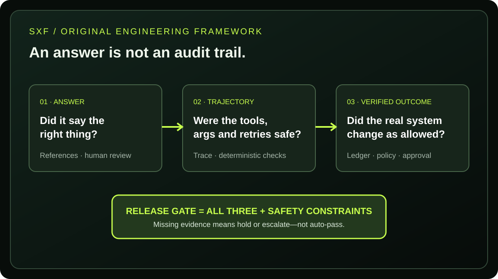

SXF / AI · INDEPENDENT ENGINEERING GUIDE · 2026
Best AI Agent Testing Tools (2026): LangSmith vs Braintrust vs DeepEval vs Phoenix
A buyer's guide to AI agent evaluation platforms: compare tool-call correctness, tracing, regression testing, production monitoring, self-hosting and real pricing units. Includes an original, reproducible SXF failure-audit fixture—not an invented vendor benchmark.
DIRECT ANSWER
What is the best AI agent testing tool in 2026?
For LangGraph workflows, start with LangSmith; for experiment-driven release gates, compare Braintrust; for Python tests-as-code, use DeepEval; and for OpenTelemetry-first, self-managed tracing, evaluate Arize Phoenix. The best choice depends on whether you need to score a final answer, inspect the sequence of tool calls or verify that a real system actually changed. No platform can prove a refund or database update happened unless your evaluation supplies trustworthy external evidence.
Scope: four selected tools, not a ranking of every vendor. Features reflect primary documentation, not a hands-on equivalence test of their hosted products. Read the method and limits.
01 · BUYER COMPARISON
LangSmith vs Braintrust vs DeepEval vs Phoenix: which should you choose?
Choose an evaluation workflow, not a feature badge. LangSmith and Braintrust sell collaborative platforms; DeepEval is primarily an open-source Python test framework with an optional Confident AI service; Phoenix is self-managed software, while Arize AX is the separate hosted product. Their prices, ownership boundaries and storage units are not directly interchangeable.
| Tool | Best fit | Test & evaluation workflow | Hosting | Watch-out |
|---|---|---|---|---|
| LangSmith | LangChain / LangGraph | Datasets; offline and online evaluators; trajectory inspection | Cloud; Enterprise hosting options | Seats, traces and extras can change effective cost |
| Braintrust | Team experiments & release gates | Traces, experiments, scorers and production feedback | Cloud; enterprise arrangements | Processed data, judge scores and model usage are separate meters |
| DeepEval | Python/CI assertions | Tool Correctness, Task Completion, regression suites | Local library; optional hosted Confident AI | Hosting and managed team review are not included in the free library |
| Arize Phoenix | OTel-first tracing & self-hosting | Traces, datasets, experiments, built-in evaluators | Self-managed Phoenix; separate Arize AX cloud | Operating a self-hosted service still has infra cost |

02 · VENDOR-VERIFIED ECONOMICS
AI agent testing tools pricing: how much do LangSmith, Braintrust, DeepEval and Phoenix cost?
As of November 12, 2026, the publicly listed paid entry points are LangSmith Plus $39 per seat/month, Braintrust Pro $249/month, Confident AI Starter $200/month and Arize AX Pro $50/month. The open-source DeepEval library and self-managed Phoenix do not have a vendor subscription fee, but judges, compute, storage and operations still cost money.
| Stack | Free entry | Paid entry | What is actually metered? | Official source |
|---|---|---|---|---|
| LangSmith | Developer: 1 seat; 5,000 base traces/month | $39/seat/month Plus; 10,000 base traces/month | Seats plus usage; extra traces and other services pay-as-you-go | Pricing ↗ |
| Braintrust | Starter: 1 GB data, 10,000 scores/month | $249/month Pro; 5 GB data, 50,000 scores/month | Processed data, scores and model credits/usage | Pricing ↗ |
| DeepEval + Confident AI | Apache-2.0 library; platform Free: 5 test runs/week | $200/month Confident AI Starter | Managed platform, span storage and judge inference | Pricing ↗ |
| Phoenix + Arize AX | Self-managed Phoenix; AX Free: 25,000 spans/month | $50/month AX Pro; 50,000 spans/month | Hosted span/data limits, retention, or your own servers | Pricing ↗ |
Why the cheapest monthly price can be misleading
Ten thousand traces are not ten thousand spans, scores, test runs or gigabytes. An agent run can contain many nested spans, multiple judge calls and repeated attempts. Estimate monthly production runs × average spans per run × fraction evaluated × scores per evaluated run, then add storage retention, user seats, LLM-judge tokens, PII redaction and operational support.
For procurement, request a quotation against the same workload: 20,000 monthly agent runs, eight spans per run, two evaluation scores on 10% sampled runs, five seats and 30-day retention. This is a proposed comparison workload, not an SXF vendor bill or an observed price. Ask vendors to identify any excluded AI-judge charges and data egress costs.
03 · TEST DESIGN
What should AI agent evaluation tools measure beyond answer accuracy?
AI agent reliability is not merely whether the final response sounds right. A useful test captures the proposed action, tool name, arguments, retries, permissions and verified downstream effect. Testing only the response will systematically miss certain state-changing failures.
1 · Answer and task quality
Was the user's intent addressed correctly? Compare against a trusted reference where possible; use human review for ambiguous outcomes. LLM judges can support triage but are not ground truth.
2 · Trace and trajectory quality
Did the agent select the right API, preserve arguments, bound retries and obey the intended sequence? Deterministic assertions are preferable where exact tool and schema expectations exist.
3 · Verified state and policy
Did the database, payment provider or ticket system actually record the intended change? Was human approval obtained where required, and were secrets excluded from traces?
For adjacent material, see SXF's 12 AI agent reliability metrics, 25-test agent evaluation checklist, production observability guide and agent security controls. Those pages define the broader disciplines; this article compares software you can adopt to implement them.
04 · PRODUCT DEEP DIVE
Is LangSmith the best AI agent testing platform for LangGraph?
LangSmith is a strong starting point when your team already uses LangGraph or LangChain: its workflow connects traces, datasets, offline regression tests, online evaluation and feedback. Its developer tier is free for one seat within published trace allowances; Plus adds collaboration at $39 per seat/month, plus metered usage.
Strength: tight inspection of multi-step agent traces, evaluation datasets, and online/offline evaluator support. Trade-off: product breadth and billing beyond seats make a simple headline price incomplete. A non-LangChain team should prototype instrumentation before assuming equivalent effort. Primary LangSmith evaluation docs ↗.
Best LangSmith test to run in a pilot
Feed a set of known customer-support tasks to the agent twice, change one tool failure condition, and compare actual tool sequence, task outcome and escalation decision across both runs. Export a trace ID for every failed example.
05 · PRODUCT DEEP DIVE
When is Braintrust better than LangSmith for AI agent evals?
Braintrust is appealing when the engineering team wants shared experimental datasets, scorers, inspection and review tied closely to shipping changes. Its Starter tier includes usage allowances with no seat cap; Pro lists $249/month before any overage or extra model usage.
Strength: experiment-oriented collaboration, customizable scoring and production feedback. Trade-off: trace volume and evaluation activity are billed on different meters, and its managed platform must be assessed against your privacy requirements. Do not infer that a scored trace proves a downstream transaction settled. Official Braintrust pricing and units ↗.
Best Braintrust test to run in a pilot
Use the same versioned dataset for every candidate agent release. Require a deterministic tool-call assertion and one independently checked business outcome, then observe how the experiment comparison is surfaced to reviewers.
06 · PRODUCT DEEP DIVE
Is DeepEval the best open-source AI agent testing framework for Python?
DeepEval fits teams that want agent evaluations as executable Python tests. It supports tool correctness and task completion metrics, with a CLI intended for local and CI workflows. Confident AI is a separate hosted product offering collaboration and live-traffic evaluation.
Strength: assertions are versionable alongside application code. Trade-off: an evaluation library is not automatically a production observability service. DeepEval's tool correctness can compare expected and actual tool names and, with stricter settings, arguments or outputs; this differs from independently checking a database after execution. Official Tool Correctness metric ↗.
How to add agent regression testing to CI
Pin a dataset and evaluator configuration to a repository commit. Run deepeval test run using the documented integration, keep judge-model IDs stable, and fail the release on an explicit policy or correctness regression. Store no secrets in fixture files. Agent quickstart ↗.
07 · PRODUCT DEEP DIVE
When should you choose open-source Arize Phoenix for AI agent observability and testing?
Choose Phoenix when OpenTelemetry-compatible tracing and control of deployment are major requirements. Phoenix offers traces, datasets, experiments and evaluators; Arize AX is a different hosted service with published Free and Pro allowances.
Strength: OTel-oriented tracing, local inspection and pre-built evaluators including Tool Selection and Tool Invocation. Trade-off: self-managed deployments need infrastructure, backups and access controls, while a hosted AX price is not a direct quote for Phoenix's self-hosted total cost. Phoenix evaluation docs ↗.
Best Phoenix test to run in a pilot
Trace an agent invocation with a wrong tool argument, label its expected function and parameter contract, and determine whether the trace and your evaluator make the failing step easy to find. Verify who can access recorded inputs.
08 · ORIGINAL SXF ANALYSIS
SXF Agent Failure Audit: what does answer-only testing miss?
In a 12-case synthetic fixture created by SXF for this article, answer-only scoring accepts 10 of 12 example runs, while a stricter answer + trace + verified-state + policy gate accepts only 4 of 12. Six answer-positive fixtures contain a deliberately planted failure. These numbers describe our authored examples—not LangSmith, Braintrust, DeepEval, Phoenix or real production failure rates.
SXF DETERMINISTIC FIXTURE · NO API KEYS
Inspect a deliberately flawed agent run
Each case is a fixed test input. Change the case to see why a polished answer may still fail a release gate.
The examples are constructed, not observed platform outputs. Works offline; no tracking, API or account required.
02 · Phantom refund
Agent says refunded; ledger unchanged
Release gate: FAIL · final answer overstates verified state.
Rule: full pass requires answer, tool, arguments, state and approval checks to pass, and zero duplicate actions, retry-budget breaches or sensitive trace leaks. A false positive here means passing the answer-only gate but failing the stricter fixture gate.
What does the SXF fixture actually demonstrate?
It demonstrates a measurement-design blind spot, not vendor superiority: if you accept a polite "Refund completed" without checking the payment provider ledger, an agent can appear successful while nothing happened. Similarly, an accurate final answer cannot excuse duplicate side effects or leaked credentials. Adding independent checks changes which runs pass by construction, so the 10-versus-4 result must not be extrapolated into a production accuracy percentage.
How could a team reproduce this with a live agent?
Start with the CSV cases as a design template, implement controlled mocks for tools, collect full traces, reset the environment between runs, and independently inspect downstream state. Then run the identical test set across vendors with consistent instrumentation and report failures, judge disagreement, cost and time. Until that live protocol is executed, this article makes no measured platform ranking.
09 · PRACTICAL SELECTION
How do you choose an AI agent evaluation platform without wasting budget?
Run a small, identical agent workload against your shortlist and decide with hard acceptance criteria: evidence completeness, CI integration, data controls, repeatability and fully loaded cost. Never buy solely because a dashboard advertises an "accuracy" percentage.
- Define the action boundary. Decide which tool calls, changes and approvals the agent is permitted to make.
- Prepare a verified reference set. Include successful tasks, incorrect arguments, timeouts, duplicate writes, prompt injection, policy bypass and quiet failures.
- Separate evaluators. Use code assertions for known invariants and LLM judges only for subjective criteria.
- Require trace-to-outcome links. Store a joinable test ID across agent run, trace and authoritative system record.
- Test release gating. Re-run the same fixtures on every proposed change; stop releases for critical policy regressions.
- Price identical workloads. Normalize seats, runs, spans, scores, retention and model-judge tokens before comparing quotes.
- Review privacy and security. Redact secrets before ingestion; test retention, access, tenant boundaries and deletion.
10 · SEARCH QUESTIONS
AI agent testing tools: frequently asked questions
What tools measure AI agent reliability and correctness?
LangSmith, Braintrust, DeepEval and Phoenix can support agent evaluation, but they cover different portions of the workflow. Reliability testing should combine repeated outcomes, trajectory inspection, tool-call assertions, state verification and policy checks. An evaluator's score alone is not proof of a real-world action.
What is the difference between AI agent testing and AI agent observability?
Testing deliberately evaluates defined cases against expected results, often before release. Observability records and explains what happened during live execution. Production teams typically need both: tests to catch predictable regressions and traces to investigate new failures.
Is DeepEval free, and does it replace LangSmith?
The open-source DeepEval Python framework can run locally, but any judge-model API usage and CI infrastructure may cost money. It is not a complete drop-in replacement for LangSmith's managed tracing, feedback and hosted workflows. Confident AI is a separately priced platform.
Is Arize Phoenix free to self-host?
Phoenix is available for self-managed use without a vendor platform subscription. Infrastructure, operations, retention, security and model-based evaluations still have costs. Arize AX is a separate SaaS offering with its own free and paid limits.
How do I evaluate AI agents in CI/CD?
Version representative test cases, call the agent against isolated test systems, capture tool arguments and results, compare against reference outcomes, and fail the CI run on critical regressions. Repeat stochastic cases; preserve raw evidence; never allow the test to mutate real customer or payment data.
Which AI agent evaluation tool is best for small teams?
DeepEval for Python-first testing and self-managed Phoenix for tracing are practical no-subscription starting points if the team can maintain its own infrastructure. LangSmith's one-seat Developer plan and Braintrust's free Starter plan are alternatives if a managed experience is preferable.
11 · SOURCES & INDEPENDENCE
How did SXF research this AI agent testing tools comparison?
SXF reviewed each provider's published pricing and product documentation on . Feature descriptions are documentary, not hands-on vendor test results. The separate 12-case fixture is a transparent, manually constructed diagnostic lab that can be inspected and downloaded. No paid rankings, inferred vendor benchmark scores or fabricated platform experiments are used.
Search-intent selection also considered SXF's existing AI Agent Reliability study and owner-provided Search Console export, which reports the queries tools that measure ai agent reliability and correctness (4 impressions), platforms that benchmark ai agent reliability and correctness (3) and best ai agent reliability tools (2) in the exported period. These counts are observed impressions, not search volume or projected traffic.
Primary references (checked November 12, 2026)
- LangSmith pricing ↗
- LangSmith offline and online evaluation ↗
- Braintrust pricing ↗
- Braintrust agent evaluation ↗
- DeepEval tool correctness ↗
- DeepEval agent evaluation quickstart ↗
- Confident AI platform pricing ↗
- Phoenix documentation ↗
- Phoenix built-in evaluators ↗
- Arize AX / Phoenix pricing ↗
- Google Article structured data guidance ↗
Editorial policy: vendor links above are informational, not affiliate or sponsored placement. Pricing and features may change; check the vendor's current terms before procurement. The diagram and CSV are SXF-authored examples, not third-party audit evidence. SXF editorial methodology ↗.